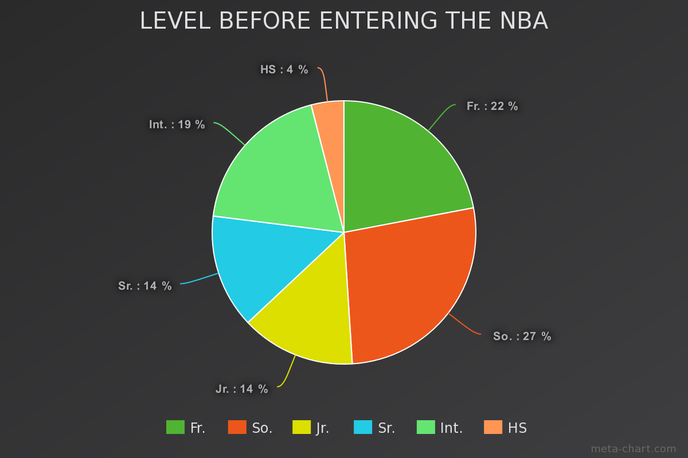

Are College Freshman the Best NBA Prospects?
By Stephen Chien| March 30, 2017

In the present-day era of college basketball, John Calipari, one of the most influential basketball coaches in the nation, has spearheaded the movement of the “one-and-done rule”. In 2005, the National Basketball Association created a rule where players had to be one year out of high school in order to be eligible for the Draft. Nowadays, many coaches, such as Calipari, are trying their best to send college freshmen to the NBA. The University of Kentucky, where Calipari coaches, has made this a system in the last few years in basketball, completely transforming their roster year after year. Calipari’s reputation stems from the fact that he has constructed elite teams each season and allowed the potential of many of his players, who are mostly first-years, to shine in a way that NBA scouts appreciate. Numerous scouts rank freshmen extremely high, as they believe that they often have more potential than the basketball players who have spent more than a year in college. Sometimes, this proves to be true, such as with young talents like Andrew Wiggins, Karl Anthony Towns, and Kevin Durant. However, many young players never live to their expectations, like Greg Oden and Anthony Bennett, due to injuries, off-court antics, or just mediocre to below average performances on the court.
This made me wonder if college freshmen that made it to the NBA are the best players currently in the league. I used ESPN’s Real Plus/Minus statistic to calculate the 100 most efficient players currently in the NBA. The Real Plus/Minus stat calculates how much better a team performs when a certain player is on the floor playing. Using this data, I calculated the percentage of the top 100 players who were drafted as freshmen and surprisingly, it came out to only 22%. Other players who were drafted from college made up 55% of the top 100, with internationals and players drafted directly from high school making up the rest.
Many people often forget that superstars like Stephen Curry, Russell Westbrook, and James Harden spent more than a year in college to develop into the players they are today. Numerous players have developed into solid players, such as CJ McCollum and Jimmy Butler, who were both not “one and dones”. Even this current NBA season, Malcolm Brogdon, a rookie guard that spent four years at the University of Virginia, ranks 58th on the list and has been a solid role player for the Milwaukee Bucks.
What does this mean when drafting players in the future? In my opinion, scouts should be warier of a player’s age, even if he has great potential. Going into the NBA straight out of one year in college could be an overwhelming experience for some players and staying in college for more than one year could help develop their game. Players can often times be unprepared for a long 82 game regular season and the physicality, pace, and athleticism in the NBA. In addition, freshmen that are high lottery picks have extreme pressure exerted upon them, and as a 19-year-old teenager, that could be difficult to handle. Even though many teams realize that it may take years for players to perform well, some players lose playing time as a result of their team’s impatience, playing time that is necessary at that age to develop. A good example of a player that NBA teams regarded as having high potential was Bruno Caboclo, a mid-first rounder from 2014’s draft class. Hailed as the “Brazilian Kevin Durant”, Caboclo was 19 years old when he entered the NBA, similar to college freshmen entering the NBA. In the past two seasons, Bruno has barely played for the Raptors and primarily played in the NBA D-League. He has not performed well for the Raptors so far, exposing the risks involved with drafting freshmen.
However, rolling the dice for a college freshman prospect could be very rewarding. Anthony Davis, John Wall, and Kyrie Irving are all franchise cornerstones and one of the best, if not the best players on their teams. Lebron James went straight from high school to the pros and is simply one of the best to ever play the game. Although selecting a freshman in the draft is always a gamble, it could definitely pay off and result in high success. If I were to draft a player in the mid-lottery section, I would still draft the more experienced college player compared to the freshman unless I was extremely convinced that the freshman had unique, special talent that could tremendously improve the team. Teams should not automatically look to college freshmen as the answer to their problems, but equally examine players across the age spectrum.
Edited by Neil Sharma